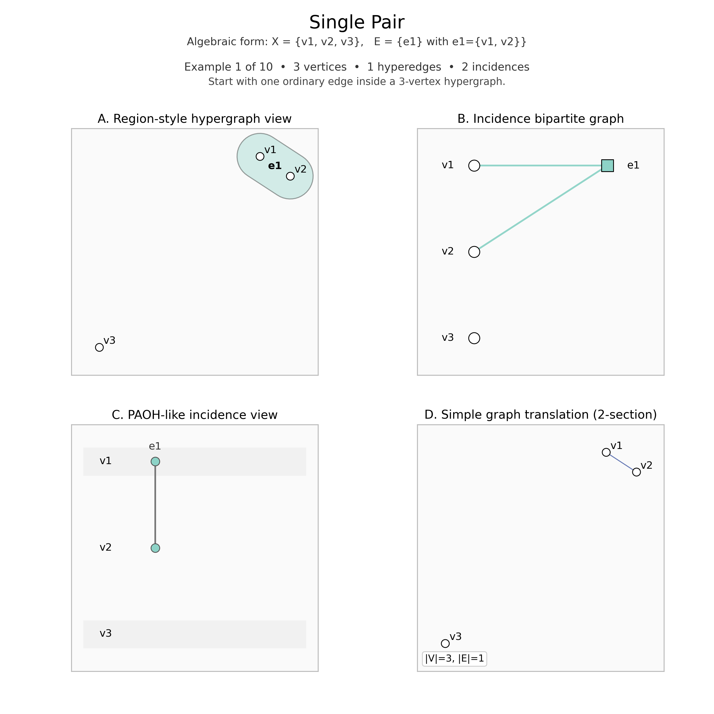
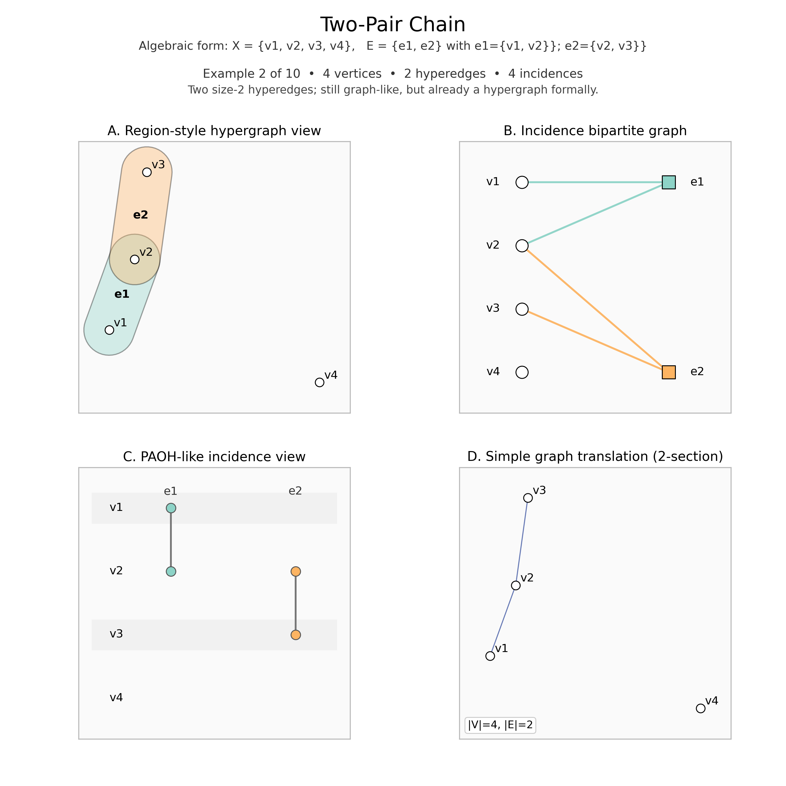
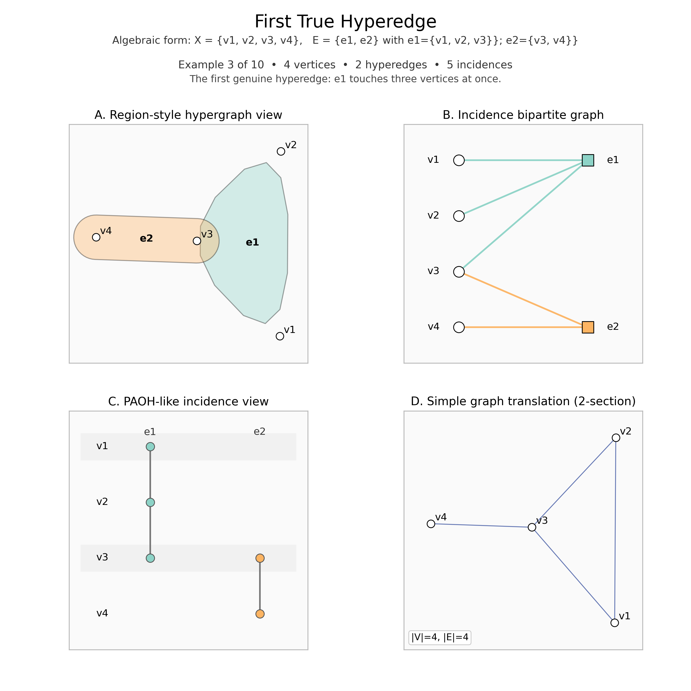
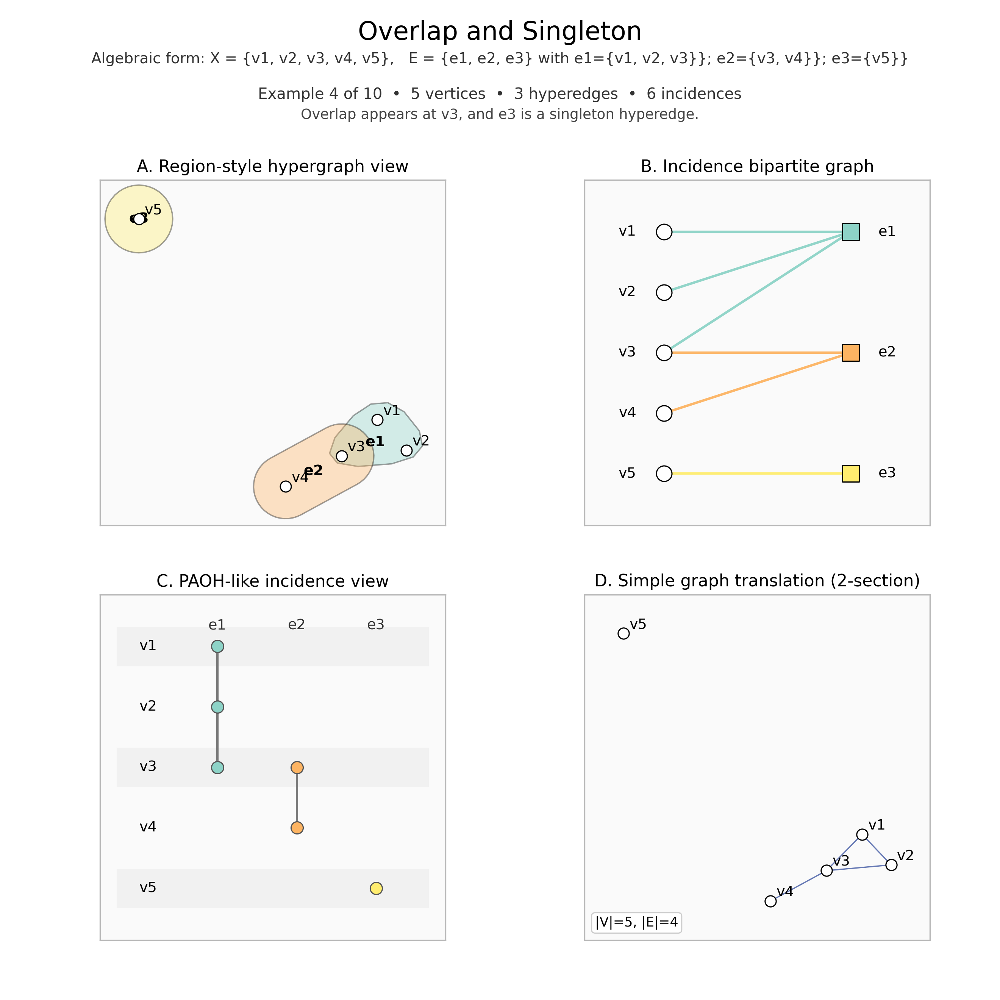
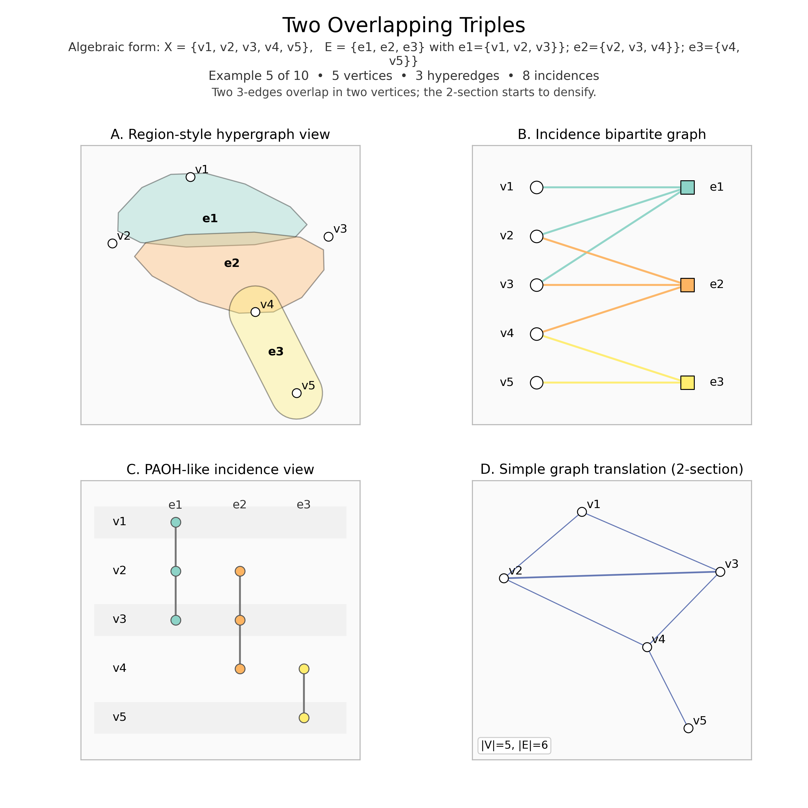
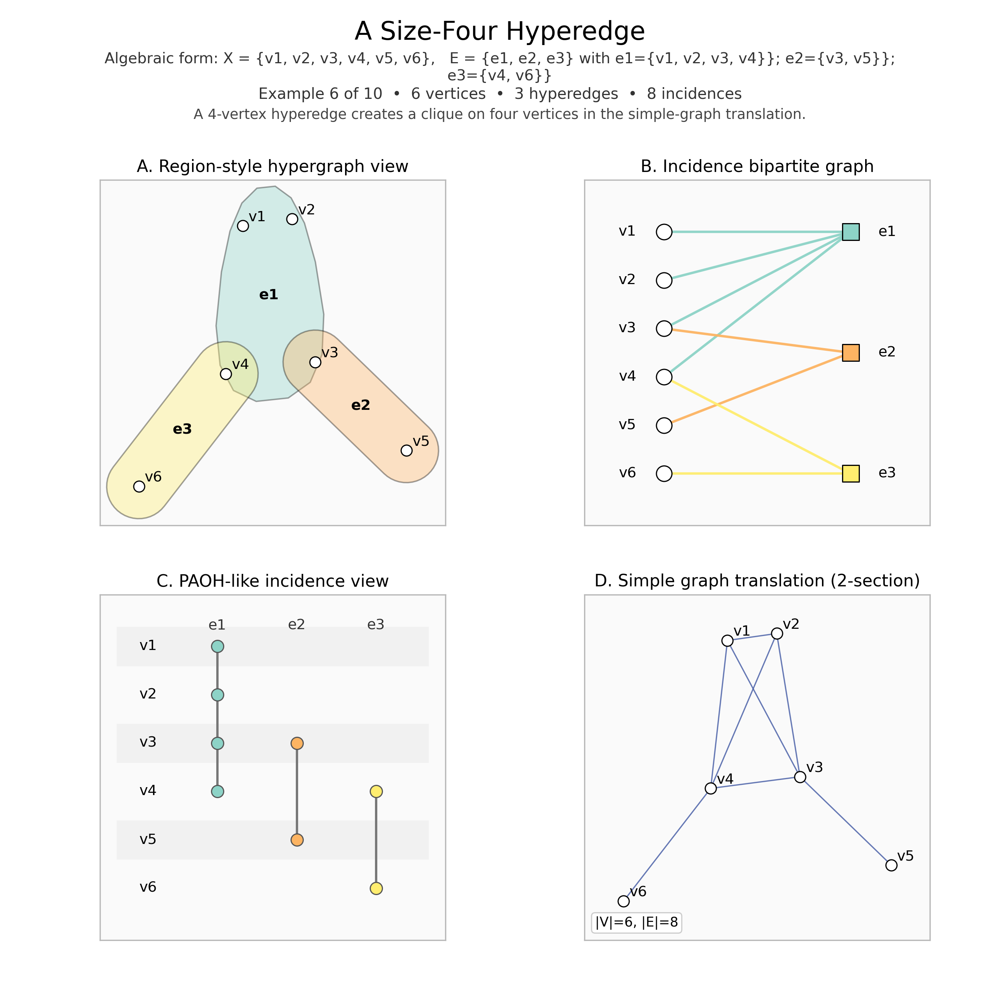
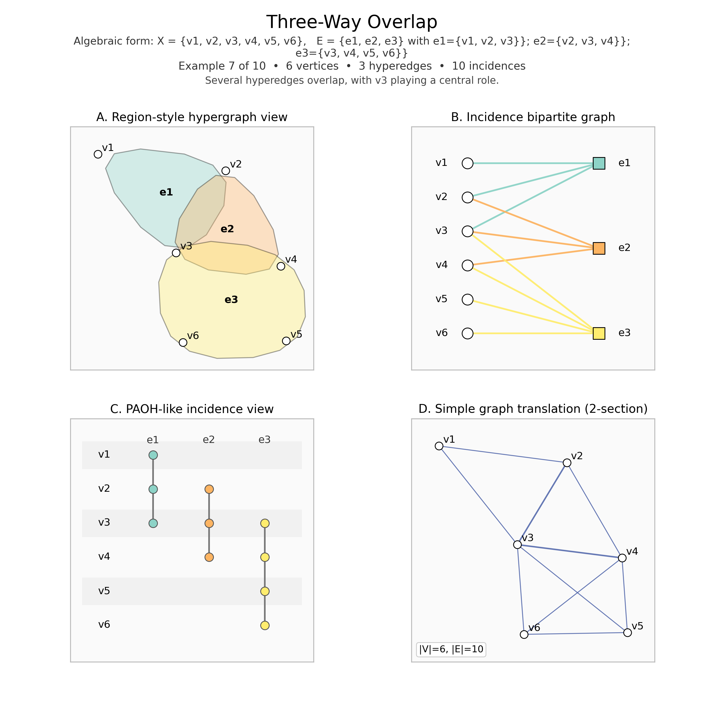
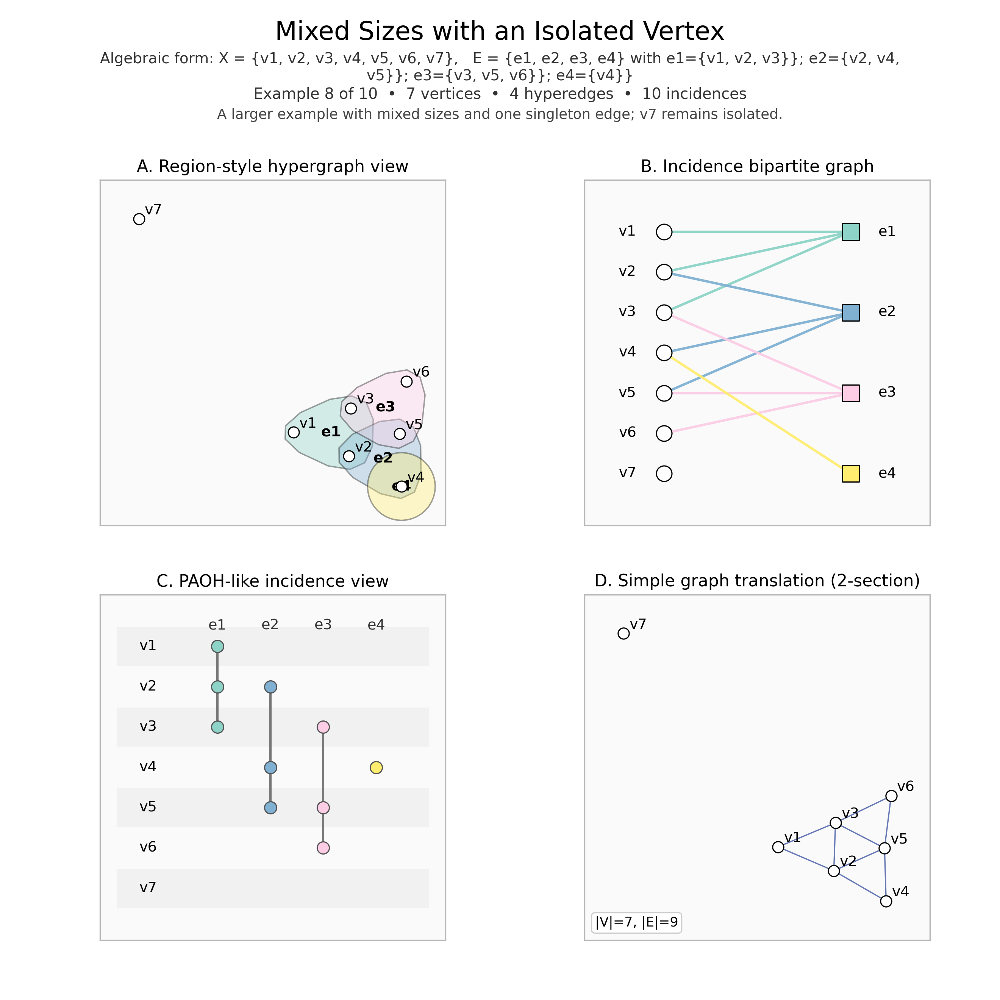
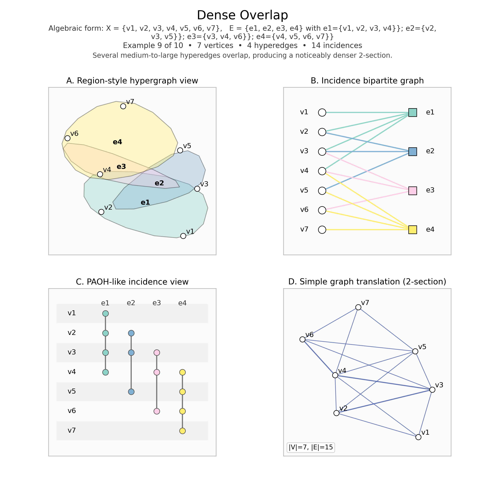
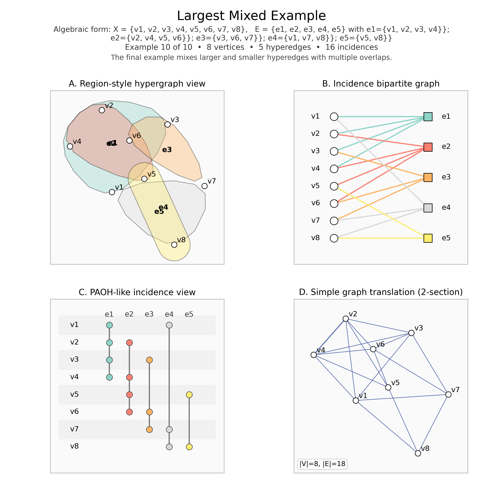

A hypergraph is a generalization of an ordinary graph. In a graph, every edge joins exactly two vertices. In a hypergraph, a single hyperedge may join two vertices, three vertices, four vertices, or more.
The ten PNGs below are ordered from simpler to more structurally involved examples. Early examples are graph-like, while later ones show larger hyperedges, overlaps, singleton edges, and isolated vertices.
hypergraph_outputs/.Algebraic example. $X=\{v1, v2, v3\}$ and $E=\{e1\}$, where $e1=\{v1, v2\}$.
One ordinary edge on three vertices.

hypergraph_outputs/hypergraph_01_single_pair.png.Algebraic example. $X=\{v1, v2, v3, v4\}$ and $E=\{e1, e2\}$, where $e1=\{v1, v2\};\; e2=\{v2, v3\}$.
Two size-2 edges sharing one vertex.

hypergraph_outputs/hypergraph_02_two_pairs_chain.png.Algebraic example. $X=\{v1, v2, v3, v4\}$ and $E=\{e1, e2\}$, where $e1=\{v1, v2, v3\};\; e2=\{v3, v4\}$.
A three-vertex hyperedge appears for the first time.

hypergraph_outputs/hypergraph_03_first_true_hyperedge.png.Algebraic example. $X=\{v1, v2, v3, v4, v5\}$ and $E=\{e1, e2, e3\}$, where $e1=\{v1, v2, v3\};\; e2=\{v3, v4\};\; e3=\{v5\}$.
One overlap at v3 and one singleton edge.

hypergraph_outputs/hypergraph_04_overlap_and_singleton.png.Algebraic example. $X=\{v1, v2, v3, v4, v5\}$ and $E=\{e1, e2, e3\}$, where $e1=\{v1, v2, v3\};\; e2=\{v2, v3, v4\};\; e3=\{v4, v5\}$.
Two 3-edges overlap in two vertices.

hypergraph_outputs/hypergraph_05_two_overlapping_triples.png.Algebraic example. $X=\{v1, v2, v3, v4, v5, v6\}$ and $E=\{e1, e2, e3\}$, where $e1=\{v1, v2, v3, v4\};\; e2=\{v3, v5\};\; e3=\{v4, v6\}$.
A 4-edge creates a larger clique in the simple-graph translation.

hypergraph_outputs/hypergraph_06_size_four_edge.png.Algebraic example. $X=\{v1, v2, v3, v4, v5, v6\}$ and $E=\{e1, e2, e3\}$, where $e1=\{v1, v2, v3\};\; e2=\{v2, v3, v4\};\; e3=\{v3, v4, v5, v6\}$.
Several edges meet around the same central vertices.

hypergraph_outputs/hypergraph_07_three_way_overlap.png.Algebraic example. $X=\{v1, v2, v3, v4, v5, v6, v7\}$ and $E=\{e1, e2, e3, e4\}$, where $e1=\{v1, v2, v3\};\; e2=\{v2, v4, v5\};\; e3=\{v3, v5, v6\};\; e4=\{v4\}$.
Mixed edge sizes appear while v7 stays isolated.

hypergraph_outputs/hypergraph_08_with_isolated_vertex.png.Algebraic example. $X=\{v1, v2, v3, v4, v5, v6, v7\}$ and $E=\{e1, e2, e3, e4\}$, where $e1=\{v1, v2, v3, v4\};\; e2=\{v2, v3, v5\};\; e3=\{v3, v4, v6\};\; e4=\{v4, v5, v6, v7\}$.
Multiple medium and large edges now overlap heavily.

hypergraph_outputs/hypergraph_09_dense_overlap.png.Algebraic example. $X=\{v1, v2, v3, v4, v5, v6, v7, v8\}$ and $E=\{e1, e2, e3, e4, e5\}$, where $e1=\{v1, v2, v3, v4\};\; e2=\{v2, v4, v5, v6\};\; e3=\{v3, v6, v7\};\; e4=\{v1, v7, v8\};\; e5=\{v5, v8\}$.
The final example mixes several overlaps and edge sizes.

hypergraph_outputs/hypergraph_10_largest_mixed_example.png.